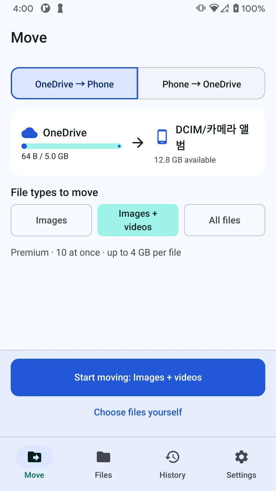

OneDrive-Fotos über ein altes Pixel in Google Fotos sichern: Was unbegrenzt ist und was nicht
Dein OneDrive meldet „Speicher voll“, und in der Schublade liegt noch ein Pixel 3a oder ein Pixel 5? Dann kennst du vermutlich den Tipp: Ältere Pixel dürfen Fotos und Videos weiterhin kostenlos und unbegrenzt in Google Fotos sichern. Das stimmt, aber mit Einschränkungen, die in vielen Kurzfassungen fehlen. Hier steht, was Google tatsächlich zusagt und wie deine OneDrive-Fotos sauber auf das Pixel kommen. Wir sind das Team hinter DriveSync, einer App für genau diesen Umzug. Alles hier klappt aber auch ohne sie.
Das Wichtigste in Kürze
- Kostenlos und unbegrenzt in Originalqualität sichert nur das erste Pixel von 2016. Pixel 2 bis Pixel 5 sichern kostenlos in der komprimierten Qualität „Speicherplatz sparen“. Ab Pixel 5a und Pixel 6 gibt es den Vorteil nicht mehr.
- OneDrive wird erst leer, wenn du auch den OneDrive-Papierkorb geleert hast.
- Wer seine Originale behalten will, braucht vorher eine zweite Kopie.
Welches Pixel sichert was kostenlos?
Die Regeln stehen in der Google Fotos-Hilfe unter Sicherungsqualität für Fotos und Videos auswählen (Tab „Android-Smartphone und -Tablet“, Abschnitt zur Sicherung für Pixel). Stand 25. November 2026:
| Modell | Kostenlose Sicherung in Google Fotos |
|---|---|
| Pixel (1. Generation, 2016) | Unbegrenzt in Originalqualität. „Speicherplatz sparen“ gibt es auf diesem Gerät nicht. |
| Pixel 2 | Was nach dem 16.01.2021 gesichert wird: kostenlos in „Speicherplatz sparen“ |
| Pixel 3 | Was nach dem 31.01.2022 gesichert wird: kostenlos in „Speicherplatz sparen“ |
| Pixel 3a, 4, 4a, 5 (bei Google: „Pixel 3a–5“) | In „Speicherplatz sparen“ ohne Begrenzung und ohne Kosten. In Originalqualität geht es von deinem Kontospeicher ab. |
| Pixel 5a, Pixel 6 und neuer | Keine kostenlose unbegrenzte Sicherung |
Steht bei einem Pixel 2 bis 5 in den Sicherungseinstellungen „Originalqualität“, zählt jede Sicherung auf die bis zu 15 GB deines Google-Kontos.
Zählen auch Fotos, die nicht mit dem Pixel aufgenommen wurden?
An dieser Frage hängt der ganze Trick, und Google beantwortet sie nicht eindeutig. Auf der deutschen Hilfeseite steht, der unbegrenzte Speicherplatz gelte für Fotos und Videos, „die du mit deinem Smartphone aufgenommen und hochgeladen hast“. In der englischen Fassung derselben Seite heißt es „backed up from your device“, also: von deinem Gerät gesichert. Die deutsche Seite weist selbst darauf hin, dass sie maschinell übersetzte Inhalte enthalten kann.
In Foren berichten Nutzer, dass auch übertragene Fotos nicht angerechnet wurden, zum Beispiel in diesem Thread bei Android-Hilfe. Eine Zusage von Google ist das nicht. Unser Rat: Fang mit einem kleinen Schwung an, lass ihn sichern und sieh danach in der Speicherübersicht deines Google-Kontos nach, ob der belegte Platz gestiegen ist.
„Speicherplatz sparen“ ist nicht „Originalqualität“
Laut Google werden Fotos bei „Speicherplatz sparen“ komprimiert. Fotos mit mehr als 16 MP werden auf 16 MP verkleinert, Videos mit mehr als 1080p auf 1080p heruntergerechnet. Fotos können dabei in ein anderes Format wie JPG umgewandelt werden. Für Handyfotos ist das meist zu verschmerzen; bei RAW-Dateien, Bildern aus der Systemkamera oder 4K-Videos geht wirklich etwas verloren.
Auf dem Pixel liegt zunächst das unveränderte Original, komprimiert wird die Kopie bei Google Fotos. Sobald du das Original vom Pixel und aus OneDrive entfernst, bleibt bei Pixel 2 bis 5 nur die komprimierte Fassung.
Schritt für Schritt: von OneDrive über das Pixel in Google Fotos
- Schalte auf dem Pixel in Google Fotos die Sicherung ein. Bei Pixel 2 bis 5 wählst du unter Profilbild, Google Fotos-Einstellungen, Sicherung, Qualität von Fotos und Videos die Option „Speicherplatz sparen“.
- Bring die Fotos aus OneDrive auf das Pixel, und zwar in den Ordner
DCIM/Camera. Den Kameraordner sichert Google Fotos von sich aus. Andere Ordner musst du erst unter Geräteordner für die Sicherung aktivieren. - Warte, bis Google Fotos alles gesichert hat, am besten am Ladekabel und im WLAN.
- Mach Stichproben: Tauchen die Aufnahmen unter photos.google.com auf? Ist dein Google-Speicher gleich geblieben?
- Mach auf dem Pixel wieder Platz. In Google Fotos geht das über dein Profilbild und Speicherplatz auf dem Gerät freigeben. Dann ist der nächste Schwung dran.
- Lösche die übertragenen Dateien in OneDrive und leere ganz am Ende den OneDrive-Papierkorb.
Schritt 2 und 6 mit DriveSync
Mühsam sind der Transport und die Buchführung darüber, was schon kopiert und was schon gelöscht ist. Dafür ist DriveSync gemacht. Du meldest dich über die offizielle Microsoft-Anmeldung mit deinem persönlichen Microsoft-Konto an und verschiebst mit einem Tipp alle Bilder, Bilder + Videos oder alle Dateien. Einzelne Dateien und Ordner kannst du auch selbst auswählen. Die App kopiert jede Datei Byte für Byte auf das Pixel, vergleicht Größe und Hash und entfernt das Original in OneDrive erst, wenn die Kopie stimmt.

Fotos und Videos landen ohne Ordnerauswahl direkt in DCIM/Camera. Das setzt Android 10 oder neuer voraus; die App selbst läuft ab Android 8. Übertragen wird direkt zwischen deinem Smartphone und Microsoft, ohne DriveSync-Server und ohne zusätzliches Konto. Die Übertragung läuft im Hintergrund weiter, fehlgeschlagene Dateien kannst du erneut anstoßen. Vor der Anmeldung lässt sich die App mit Beispieldateien ausprobieren.
Der Schritt, den viele vergessen: OneDrive-Papierkorb leeren
Ob du von Hand löschst oder DriveSync das übernimmt: Gelöschte Dateien landen zuerst im OneDrive-Papierkorb. Dort lassen sie sich wiederherstellen; bei einem persönlichen Microsoft-Konto löscht Microsoft sie spätestens nach 30 Tagen automatisch. Solange sie dort liegen, belegen sie weiter Platz: Microsoft zählt ausdrücklich alle Elemente im Papierkorb zum Speicherkontingent.
So leerst du ihn: Öffne OneDrive im Browser, wähle im Navigationsbereich „Papierkorb“ und dann „Papierkorb leeren“. Laut Microsoft kann es danach kurz dauern, bis die Speicheranzeige nachzieht.
Kostenlose Version: höchstens 100 MB pro Datei
Kostenlos überträgt DriveSync 3 Dateien gleichzeitig und Dateien bis 100 MB, finanziert durch Werbung. Für Fotos reicht das in aller Regel. Längere Videos liegen schnell darüber und bleiben in der kostenlosen Version in OneDrive. Premium ist ein Einmalkauf ohne Abo: 10 Dateien gleichzeitig, bis 4 GB pro Datei, keine Werbung. Den Preis zeigt dir Google Play an.
Auch Google Fotos hat Grenzen: Gesichert werden laut Hilfe Fotos bis 200 MB oder 200 MP und Videos bis 10 GB.
Und ohne App?
Geht auch. Lade die Fotos am PC über die OneDrive-Website herunter, schließ das Pixel per USB an, kopiere sie nach DCIM/Camera und lösche sie danach in OneDrive von Hand. Das kostet nichts, braucht aber Platz auf dem Rechner, und du musst selbst nachhalten, was schon kopiert, gesichert und gelöscht ist. Manche lösen den Transport auch mit Sync-Apps wie FolderSync oder Syncthing; das haben wir nicht getestet.
Wenn du es lieber direkt auf dem Pixel erledigst: DriveSync bei Google Play ist für diesen Weg gebaut. Fragen beantworten wir unter support@lalatap.kr.
DriveSync ist eine unabhängige App und steht in keiner Verbindung zu Microsoft oder Google.